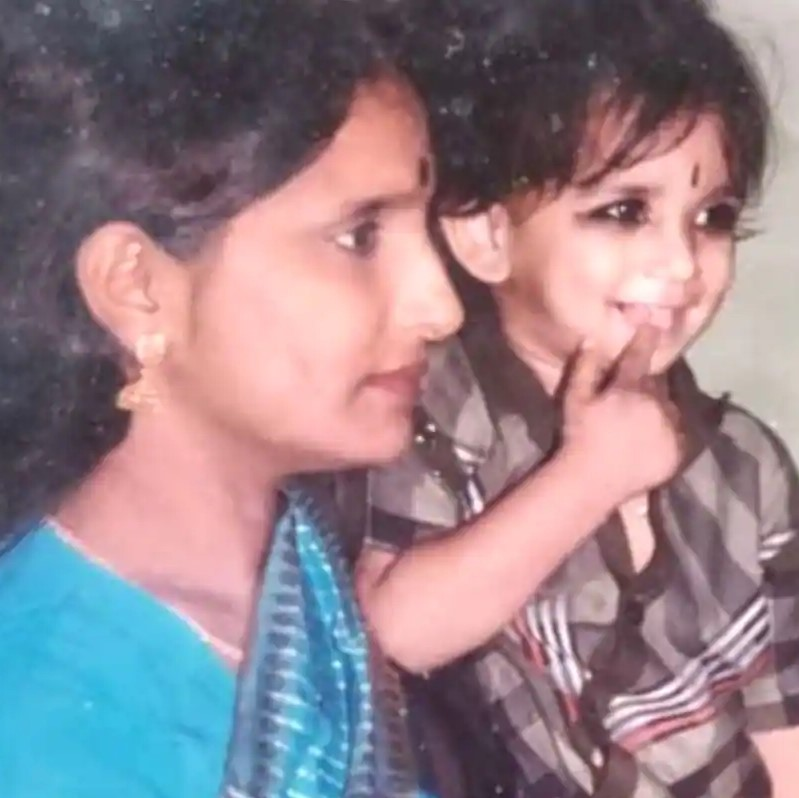

|  |
Sushant Singh Rajput was born in Patna in the state of Bihar to Krishna Kumar Singh and Usha Singh. His father is a retired technical officer and worked at Bihar State Handloom Corporation in Patna. He was the youngest of five siblings and had the nickname Gulshan. One of his four sisters Mitu Singh was a state-level cricket player. He attended the St. Karen's High School in Patna. His family moved to Delhi following his mother's death in 2002 where Rajput completed his schooling for intermediate studies in Kulachi Hansraj Model School.
Rajput was reportedly an avid reader who was deeply interested in astrophysics and won the National Olympiad in Physics. He secured admission in the Delhi College of Engineering (later renamed Delhi Technological University) to pursue a Bachelor of Engineering degree in mechanical engineering. According to Rajput, he did not have any interest in engineering but his family gave him no option which left him dissatisfied. He instead wanted to become an astronaut and later an air force pilot but was also interested in Bollywood, being a fan of Shah Rukh Khan.